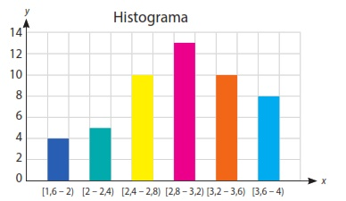
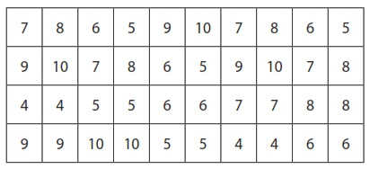
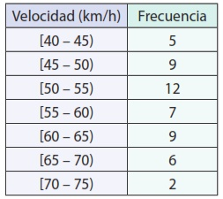
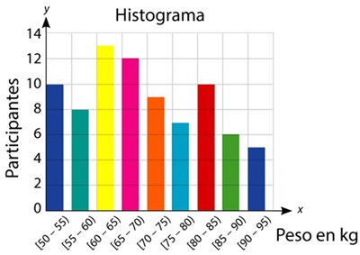

1.
Completa los enunciados y llena el crucigrama:
2.
Escribe V si es verdadero o F si es falso.
3.
Con base en el al siguiente histograma de frecuencias obtenidas, completa la tabla de
frecuencias.

4.
Calcula cuántos intervalos son necesarios para construir la tabla de frecuencias.


5.
La Secretaría de Tránsito está considerando instalar una nueva cámara de fotomultas en un barrio,
durante las horas pico de un fin de semana. El objetivo es saber cuántos autos exceden el límite de
velocidad de 60 km/h y decidir si la cámara permanente es necesaria. Después del fin de semana, los
datos de 50 autos fueron registrados.
-

- ¿Cuántos autos no superan el límite de velocidad?
- ¿Qué porcentaje de autos pasan a 60 km/h o más?
- Construye el polígono de frecuencias de la distribución de datos.
6.
Los entrenadores del famoso Gimnasio Pesa-Fuerte han decidido analizar los resultados de los 80
participantes en el Reto de Fuerza 2024. Cada participante fue pesado antes de comenzar su rutina de
entrenamiento y se obtuvo el siguiente histograma:
-

- Completa la tabla de frecuencias con los datos obtenidos del histograma:
- ¿Cuántos participantes pesan menos de 70 kg?
participantes pesan menos de 70 gk

Formen grupos y realicen las siguientes actividades.
- Recopilen datos de sus compañeros de clases y realicen una tabla de frecuencias, por ejemplo: horas de estudio, altura de los compañeros.
- Utilizando los datos recopilados, construyan un histograma para representar gráficamente la distribución de los datos de estudio.